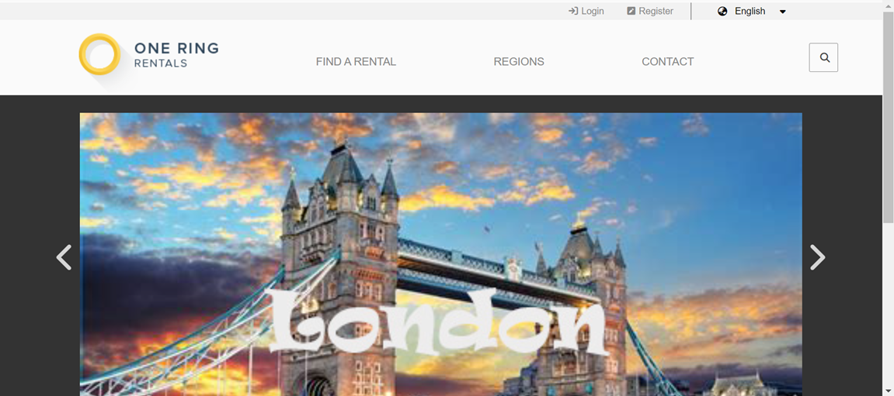

-
'Clive... of the Dead' marked my first venture into Unity game development. The game introduced the intrepid adventurer,
Clive Deadwaite, in an engaging 2D platformer.

Developed using C# and the Unity game engine, 'Clive' features dynamic enemy AI and interactive environments.

Players guide Clive through a perilous graveyard where they must:
- Evade swooping bats with sonar-based behavior
- Navigate around patrolling spiders and scurrying rats
- Collect treasures scattered throughout the level
- Discover hidden "Easter Eggs" for bonus points

The project showcases my ability to implement:
- Enemy AI behavior scripts in C#
- Player movement and jump mechanics
- Dynamic sound effects and background music
- Collision detection and physics
- Score and health tracking systems
This project unlocked a passion for creating engaging user experiences whilst applying
fundamental programming concepts in a practical and entertaining way.
-
The Recipe Book app, developed in early 2021, began as a database project that evolved into a comprehensive recipe management system. Written entirely in C#, it demonstrates my ability to create practical, user-focused applications.

At its core, the application provides intuitive database functionality, allowing users to store, retrieve, create, and edit their favorite recipes. A standout feature is the 'Faves' marking system, enabling quick access to preferred recipes through a custom-designed menu interface.

The project showcases both database management and UI design skills, incorporating features like ingredient tracking, cooking instructions, and recipe categorization. The clean, user-friendly interface makes navigation and recipe management effortless.

Developing this application pushed me to expand my technical boundaries. I was determined to achieve a specific vision for the app's look and functionality, leading to intensive problem-solving sessions and deep dives into C# capabilities.

The complexity of the project even led me to collaborate with SyncFusion's technical team in the USA, demonstrating my commitment to finding solutions and willingness to reach out to industry experts when needed.

This project represents not just technical achievement, but also my dedication to creating polished, user-centered applications that solve real-world needs.
-
The Life & Boats of CaptainSteve was my first live-hosted website, showcasing my collection of historic wooden model ships. We learned about Search Engine Optimization (SEO) and how to connect with Google to interface with actual web-users. Fuelled by my recently discovered interest in JavaScript, I created a somewhat unique landing page for this site.

The site's standout feature is an innovative navigation system disguised as a maritime adventure. Users guide their vessel across a rolling ocean to discover different content islands, replacing traditional menu navigation with an interactive experience. When visitors "land" their ship on an island, they're transported to content featuring detailed information about modelling of historic wooden ships.
The immersive experience is enhanced by animated ocean effects and ambient maritime sounds - gentle waves lapping against the shore and seagulls calling overhead - creating an atmospheric backdrop for exploring the content. Users can control this soundscape through a custom-built mute function.
This project marked a significant milestone in my development journey, particularly with JavaScript. Driven by a specific vision for the site, I spent the summer of 2022/23 diving deep into additional JavaScript tutorials and techniques, expanding my programming skills well beyond the basic curriculum.
The content itself draws from my active participation in the ModelShipWorld (MSW) community, featuring detailed photographs, historical information, and insights into model-building techniques. Each section provides visitors with a comprehensive look at this fascinating hobby.

In addition to the JavaScript code, CaptainSteve was developed using HTML, CSS, and PHP. The site, first launched in 2022, continues to serve as a testament to combining technical skills with personal passion.

You can experience this early work - a personal favourite - by visiting the live site through the Links tab at the top of this portfolio. Future plans include expanding the navigation system to incorporate touch-screen interactions, making the experience more accessible across different devices.
-
This Python application, developed as part of a data analysis unit, combines database operations with string manipulation to explore the fascinating world of word patterns. The program takes user input and performs a two-stage verification process: first confirming the word's existence in a dictionary database, then analyzing its letters to uncover hidden patterns.

The application efficiently searches through 200,000+ dictionary entries to find all possible word combinations using the same letters as the input word. A unique feature is its palindrome detection system, which not only identifies palindromes but also distinguishes between 'real' palindromes (eg: "radar") and 'pseudo' palindromes (words that become palindromes when rearranged).
The project demonstrates practical applications of database integration, algorithm optimization, and string manipulation techniques while providing an engaging way to explore the English language's flexibility. The clean, command-line interface makes the tool accessible while highlighting the power of Python for text processing applications.
-
The Video Player app was built as the final assessment for the Advanced Python programming unit in 2023. The remit was to construct an app that could search a local file system for image and video files, and then display and play these. The project was written in Python using the PyQt5 library.

The application demonstrates strong file system integration, capable of locating and managing multiple media formats. It handles video files in WMV and AVI formats, while also supporting various image formats including JPG, GIF, and PNG files, making it a versatile media management tool.
Using PyQt5's robust framework, I developed a clean and intuitive user interface that allows seamless navigation through media files. The player includes standard media controls for video playback, as well as the option for dark/light mode viewing while image viewing includes basic display functionality.

The project showcases both technical proficiency in Python programming and practical application development skills, combining file system operations, media handling, and user interface design into a cohesive application for everyday use.
-
PLUMS (Please Level Up My Skills) was an ambitious project designed to help potential TAFE students assess their readiness for various courses. As part of a development team, I was tasked with creating a sophisticated quiz system that would evaluate prerequisite knowledge across multiple disciplines.

During the first semester, our team was assigned this project as a major component of our final assessments. The system needed to handle quizzes across diverse fields including IT, Automotive, Fashion Design, Architectural Drafting, Graphic Design, Computer Animation, Catering, and Facility Management, with complexity levels ranging from Certificate III to Advanced Diploma.

Recognizing the technical challenges ahead, I dedicated my 2021/22 summer break to intensive self-study of Laravel, focusing particularly on its database management capabilities. This commitment to expanding my technical knowledge proved invaluable as I tackled the complex database architecture.

The database structure I developed supported a dynamic quiz system featuring randomized questions and multiple-choice answers. One of the key technical challenges was implementing cross-table searches across the application's seven interconnected database tables, ensuring smooth data retrieval and management.

A notable feature of the system was its automated assessment capability. Upon quiz completion, the application would calculate percentage scores and automatically email results to both the student and the quiz-authoring lecturer, providing immediate feedback on knowledge gaps and readiness levels.

The project required careful attention to user roles and permissions, as lecturers needed specialized access to create and modify quizzes while maintaining security and data integrity. Although I was later reassigned to a different project due to class size changes, the experience gained in Laravel development proved invaluable.

This project showcased my ability to tackle complex database challenges and adapt to enterprise-level frameworks, skills that continue to influence my approach to web development projects.
-
Shopper2 represents my first venture into React development, created after extensive tutorial study to understand this powerful JavaScript framework. The project served as a practical application of React fundamentals while creating a useful shopping list management tool.
The application leverages multiple React hooks including useState for state management, useEffect for side effects, useContext for global state, and useRef for direct DOM manipulation. The implementation of these hooks demonstrated my growing understanding of React's component-based architecture and state management principles.

A standout feature is the drag-and-drop functionality, allowing users to reorder items to match their supermarket's layout. This was implemented using React's Reorder component, while useCallback was employed to create custom scrollbars, enhancing the user experience during list manipulation.

The app maintains data persistence through local storage, ensuring that shopping lists survive browser refreshes. Users can add new items with their desired pantry quantities, modify existing entries, and delete items as needed. A running total at the bottom of the screen provides quick insight into list size.

The print functionality, implemented using the useReactToPrint hook, converts the dynamic web interface into a shopping-friendly printed format through custom CSS styling. This feature bridges the gap between digital organization and practical shopping use.

While seemingly straightforward, this project served as a crucial learning experience in React development, covering essential concepts like component lifecycle, state management, user interaction, and DOM manipulation. It demonstrates how fundamental React principles can be applied to create practical, user-friendly applications.
-
One Ring Rentals represents the culmination of my Diploma in Web Development, showcasing advanced techniques through a full-featured property rental website. Built using React and NextJS, the project demonstrates integration with modern web technologies including Firebase for database management and Github for image repository hosting.

The home page features a custom-developed image carousel, highlighting key properties while demonstrating advanced JavaScript functionality. Below this, users can access a sophisticated search system that filters properties based on specific criteria including bedroom, bathroom, and garage numbers. Search results are dynamically presented with routed links to detailed property pages.

A standout feature is the interactive Regions page, displaying a world map overlaid with a custom grid system marking available rental properties. This visual representation provides an intuitive way for users to explore property locations, while demonstrating advanced image mapping and coordinate system implementation.
When users select a location, the Rentals page efficiently queries the Firebase database to display all available properties for that area, complete with detailed information and high-quality images served from the Github repository. The project's architecture leverages NextJS's dynamic routing capabilities, creating individual pages for specific rental properties.

User interaction is facilitated through a professionally designed contact form, allowing potential renters to submit property inquiries. The form includes input validation and data processing capabilities, ensuring reliable communication between users and property managers.
The project serves as a comprehensive demonstration of modern web development practices, combining front-end frameworks, database integration, image management, and responsive design into a cohesive, professional application. Even the 404 error page was crafted with attention to detail, incorporating humour while maintaining professional functionality.
An earlier version of this project using React is available to view from the Links dropdown menu.